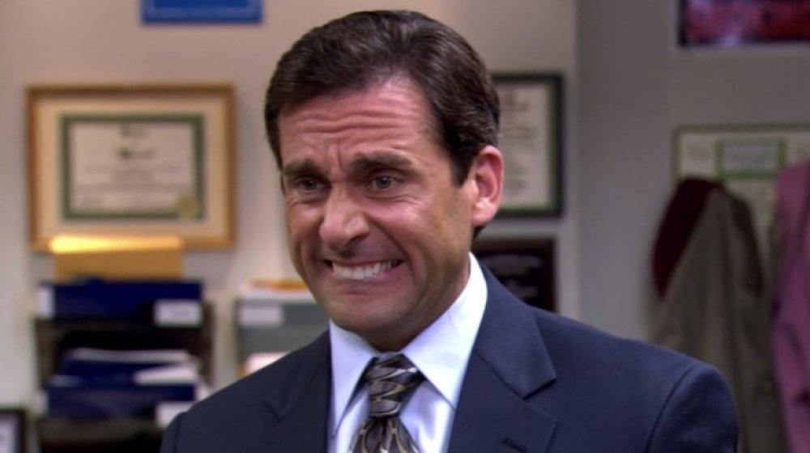

Michael Scott

Apart from his skills in sales, Michael lacks in almost any other skills, including management. Jim Halpert once made a color graph of how Michael spends his time: 80% distracting others; 19% procrastination; and 1% critical thinking. Jim added that he inflated the "critical thinking" percentage so people could actually see it on the graph. He believes he is a comedian and is very popular amongst the staff at Dunder Mifflin. Michael is known for his jokes that, most of the time, are more inappropriate and hurtful than comedic. He is delusinsal in most of his ideas and beliefs. He doesn't do much at work except conduct long and pointless conference room meetings where he showcases his comedy acts and discusses personal issues. Because he has no friends or life outside the office, he forces everyone else to be a "family" most of the time against their will. However, his delusion is showcased in his thoughts that the employees share this belief or even enjoy his presence. Michael also thinks that Scranton is "the cool, fun branch and tries desperatly to keep up that imaginiary reputation.

Chaotic is the only word that comes to mind but even that does not do this relationship justice. Comedy gold. Wrong for each other in all the wrong ways. Detrimental to both of their mental healths. Their on and off relationship lasts through Seasons 2, 3 and 4. The complications in their relationship are fueled by Michael's stupidity and Jan's mood swings. Although Jan is crazy she is actually quite intellegent and Michaels is quite the opposite which upsets her on numerous occasions. Jan is very rash and has serious anger issues which she blames on her boob job. Causing Micahel to be unhappy when they are together. Their breakup captures their realtionship beautfulily in a episode full of hilarity and choas. "Dinner Party",

Michael had other short term relationships but none I feel are notable enough to include, until Holly. Michael meets Holly Flax on her first day of work as Toby Flenderson's replacement. Michael immediatly takes an interest in Holly and with Jim's advice tries to befriend her before starting their relationship. Jim notably says "I can't believe I'm saying this, but Michael is actually killing it with Holly. And I think I know why. It's because Holly is kind of a major dork.". Holly asks Michael out in "Goodbye Stranger," but Michael oblivious to her advance accedntially regects her. Later in the season in the episode "Baby Shower," Michael asks HOlly out. They date until David Wallace finds out and transfers Holly to Nashua. They agree to a long distance relationship but break up on the drive up. In Lecture Circuit, Michael and Pam go to Nashua so Michael can see Holly but instead they run into her boyfriend AJ. However, Michael discovers a letter on her computer titled "Dear Michael." Pam reads it and tells him that she still has feelings for him. At "Company Picnic," Holly and AJ show up together and Michael plans to confess his love for her. In the end of the episode when he still has not said anything he tells the doc crew, I didn't find the perfect moment, because I think that today was about just having today. And I think that we are one of those couples with a long story when people ask how we found each other. I will see her every now and then, and maybe one year, she'll be with somebody, and the next year, I'll be with somebody, and it's gonna take a long time. And then it's perfect. I'm in no rush." Much later in Season 7, Toby leaves for jury duty, and Holly returns. She is still dating AJ, which upsets Michael because she could not do long-distance with him but is willing to try with AJ. She is still living with AJ, but he isn't making a move to propose, even after nearing two years of being together. Kelly and Phyllis pressure her to give AJ an ultimatum for marriage. In the next episode, Holly realizes that everybody knows about the ultimatum and tells everyone that he did not propose, but they are still together. Holly tells AJ Over the phone that they should take some time away from each other. In "The Search," Jim abandons Michael at a gas station with no way to contact anyone. Causing Dwight, Holly, and Erin to all form a search party and scour the city around the gas station. Michael wanders to a hot dog stand, a noodle house, and a pet store, among other places. Holly goes to each of the places in the search for Michael in an inexplicable fashion, showing the similarities between the two. Eventually, Holly finds Michael at the top of the building. Realizing their connection, the two passionately kiss. In "Garage Sale," Holly realizes she has to move home to Colorado to be with her sick parents and proposes to Michael in the break room, asking him to move with her. He runs away, wanting to have been the one to propose to Holly in some elaborate way. He later proposes to Holly beautifully, and they announce to the office that they are moving. Michael returns in the "Finale" and reveals that the two are married with three children.